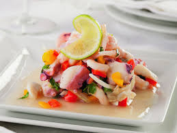

Fundación
Fundación: La ciudad de Piura fue fundada por los españoles en 1532, siendo la primer ciudad creada por los españoles, más específicamente fue Francisco Pizarro, bajo el nombre de "San Miguel de Tangarará". Además, en 1861, Ramon Castilla creo y constituyo a Piura como un departamento del Perú, nombrándolo "San Miguel de Piura y Villar" o "San Miguel de Villar de Piura", siendo que tenga 2 celebraciones por fundacion.
Culturas que habitaron
Vicús:
Ubicados en Piura, a 50 kilomeros del centro de la ciudad, cerca a Chulucanas, lo que actualmente es Morropón.
Ellos tenian, como otras culturas, un sistema politico teocrático y militarista. Ellos tenian una piramida similar a como eran otras culturas, la cual era de la siguiente forma: en lo más alto se encontraban los nobles y los monarcas, les seguian los soldados, luego venian los comerciantes, despues los agricultores y por ultimo se encontraban a los esclavos.
Ellos tenian como dios, al de los mochicas, el cual era Aia Paec. Era representado como un antropomorfo dotado de colmillos de felinos. La cultura le hacia sacrificios, porque creian que les ayudarian con la temporada de cosechas y tambien porque convertia a los humanos en demonios. Otra divinidad que ellos tenian era el sol, el cual se sumergia a las profundidades del agua y luega cuando salia se encontraba ileso (atardecer y amanecer).
Los Vicús, eran especialistas en lo que era la ceramica, con esto desarrollando diferentes utencilios domesticos, como lo son: ollas, platos y vasijas. Tambien se especializaron en las esculturas y metalurgia, la cual era usada para adorar a los dioses que tenian. Por ultimo, su arquitectura, la cual se cree que era para enterrar a figuras importantes de la civilización. Todos estos aportes ayudaron e influyeron no solo a nosotros, sino que tambien a otras culturas, a lo cual los aportes que dejaron influyenciarona todos nosotros.
Tallanes:
La cultura Tallan comprendió las costas del departamento de Piura, situada a 14 kilómetros, al suroeste de la ciudad de Piura, en el actual distrito de Catacaos.
Se establece que los Tallanes funcionaban como una serie de etnias encabezadas por un curaca o una capullana (mujer que ejercía cargo de cacique o curaquesa). Su sociedad se encontraba jerárquicamente dividida de la siguiente forma: Aristocrática, religiosa y el pueblo.
Los Tallanes, como la gran parte de las otras culturas precolombinas, era politeísta y panteísta, es decir, creían en varios dioses que se manifestaban a través de la naturaleza de su entorno. A ello, las principales fueron: La Luna, el Sol, Walac, el dios de la agricultura y por último Watán, el dios de la pesca o los pescadores.
Los Tallanes construyeron edificaciones religiosas para las deidades en los terrenos, tales como la fortaleza de Narihualá, que sigue vigente como un monumento arqueológico en la actualidad. Se ha conservado la técnica “paleteado”, consistente en golpear de forma rítmica una piedra redondeada para poder hacer vasijas, usando una paleta de madera.
Platillos típicos
La gastronomía es una disciplina que estudia la relación que existe entre la cultura y la comida que hay en un periodo de tiempo determinado. Este término nace de la fusión de 2 palabras griegas: gastros (estómago) y nomos (conocimiento). La gastronomía Piurana es una exquisita fusión de influencias indígenas, africanas y españolas reflejada en platos típicos como el Seco de Chavelo, el ceviche de conchas negras y el Tamalito Verde. El Seco de Chavelo combina ingredientes locales como el plátano verde y la yuca, con carne de res introducida por los españoles, simbolizando la rica herencia cultural de Piura. El ceviche de conchas negras destaca por el uso de este molusco típico de la región, fusionando tradiciones indígenas con la incorporación del limón y otros sabores traídos por los colonizadores. Por su parte, el Tamalito Verde, hecho a base de maíz molido y envuelto en hojas de plátano, refleja la influencia indígena en su preparación y presentación. Estos platos, junto con una variedad de jugos y cócteles de frutas tropicales como la chirimoya y el mango, completan una experiencia culinaria única y deliciosa. El cabrito a la norteña, fue proporcionado por los españoles, cambiando en cada epoca por los lugareños hasta llegar a lo que es ahora. La famosa malarrabia, la cual es un icono local tambien es un famoso plato en la zona, que es parte importante a la hora de comer en semana santa (por no llevar carnes rojas). Es originado con la llegada de los españoles y combinaciones indigenas. Por ultimo el chilcano de pescado es un plato marino el cual tiene como origen europeo, pero con el tiempo se cambiando tecnicas y llego a lo que es ahora.

Danzas típicas
El folklore Piurano, arraigado en la región norteña de Perú, es una vibrante expresión de la identidad cultural local, manifestada en danzas como el tondero, la marinera norteña y el huaylash. El tondero, con su ritmo alegre y pasos coquetos, refleja la influencia afroperuana y celebra la resistencia cultural de las comunidades afrodescendientes. La marinera norteña, elegante y sofisticada, simboliza la galantería y el romance, fusionando elementos españoles, indígenas y africanos desde la época colonial. El huaylash, una danza mestiza más común en los Andes pero presente en Piura, celebra la conexión con la naturaleza y el trabajo agrícola con movimientos enérgicos y festivos. Estas danzas no solo entretienen, sino que también transmiten la memoria colectiva y fortalecen el sentido de comunidad en Piura.